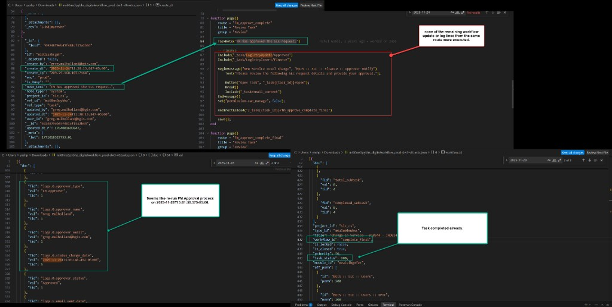

mi60ms3pybhzmi60ms3pybhz (tasks.json + notes.json)fm_approve_complete / fm_approve_complete_final in 03-FmApproval.lua against notes and approval logsworkflow_id = complete_final, task_status = 900 (closed/completed)greg.mulholland@bgis.com approved FM the first time (Confirm Complete),
TaskNote("FM has approved the SLC request.") in route fm_approve_complete
ran successfully. Note created at 2025-11-24T11:28:13.847-05:00 — route execution had started.
fm_approve_complete_final where TaskUpdateWorkflow("finance_approval") runs).
Likely the user left/closed the page before the route finished.
2025-11-28T15:01:48–15:01:50, the task was corrected and moved into Finance Approval
(FM log status_change_date and Finance log email_sent_date align to this window).
complete_final / status 900).

fm_approve_complete workflow/log lines did not run on first attempt.
{
"create_by": "greg.mulholland@bgis.com",
"create_dt": "2025-11-24T11:28:13.847-05:00",
"note_text": "FM has approved the SLC request.",
"ref_id": "mi60ms3pybhz"
}
{
"fid": "logs.0.approver_type", "val": "FM Approver",
"fid": "logs.0.approver_name", "val": "Greg Mulholland",
"fid": "logs.0.status_change_date", "val": "2025-11-28T15:01:48.492-05:00",
"fid": "logs.0.approver_status", "val": "Approved",
"fid": "logs.1.approver_type", "val": "Finance Approver",
"fid": "logs.1.email_sent_date", "val": "2025-11-28T15:01:48.727-05:00"
}
{
"workflow_id": "complete_final",
"is_closed": true,
"task_status": 900
}
Route reference: 03-FmApproval.lua —
fm_approve_complete (TaskNote + logs + RedirectReload) →
fm_approve_complete_final (TaskUpdateWorkflow("finance_approval")).
{kind=link}